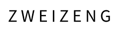
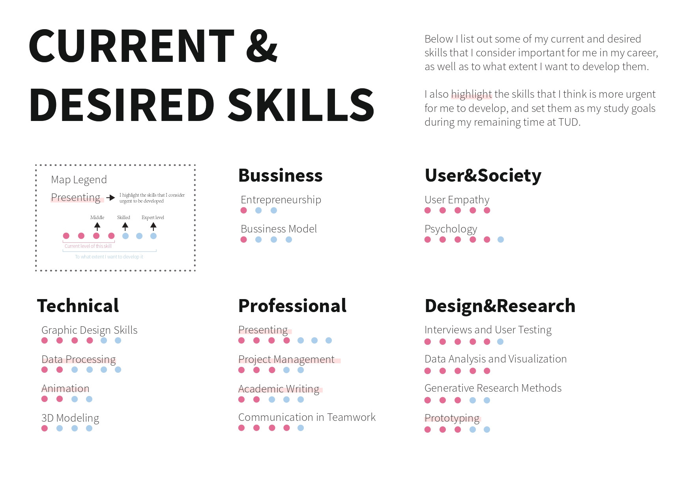

About Me
Portfolio
Contact
Home
About
Keep trying and reflecting,
learn something from anything.
Resume
/
简历
技能特长
设计
设计调研与方法论
数据可视化
UI界面设计
编程
Arduino
Html5
JavaScript
P5.js
软件
Adobe设计工具
Sketch/Axure
Unity 3D
其他
英语(IELTS 7.5)
手绘
视频剪辑
动效制作

Back to top